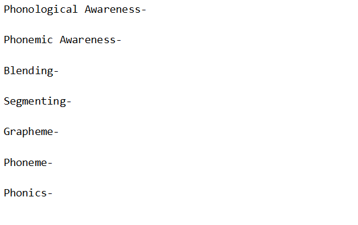
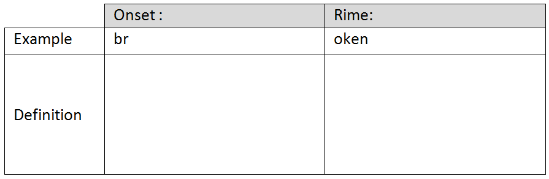
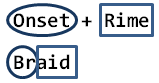
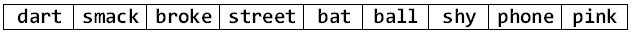

Syllables

3-28-13
Q-Review Phonemic/Phonological Awareness
Define 'Em

Diphthong vs.Vowel Digraph

Consonant Matching

Vowel Matching

Onset and Rime
onset + rime = 1 syllable word
br + oke = 1 syllable word
Define It

Importance
- Instrumental in dealing with word families
Break the Following Into Onset and Rime

Syllabication
Quick Syllable Classification

Six Types of Syllables in English
- Six types Guided Practice
- Marking Syllables Joint Practice
- Marking Syllables Individual